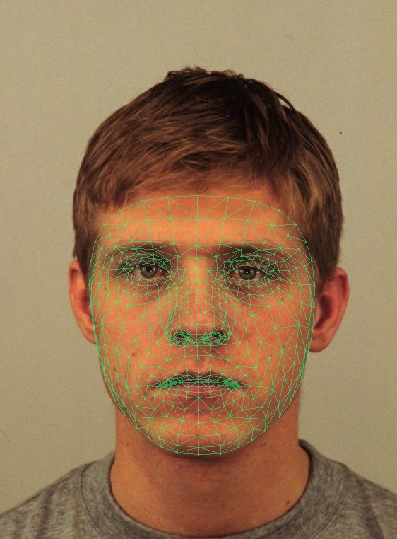
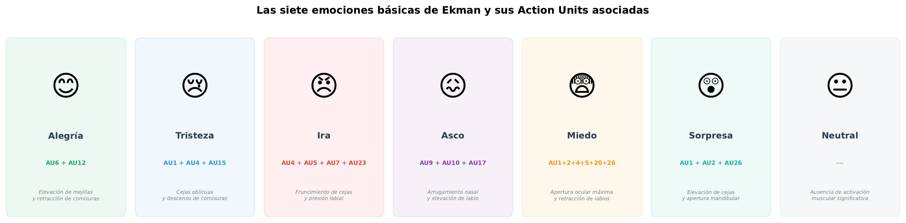
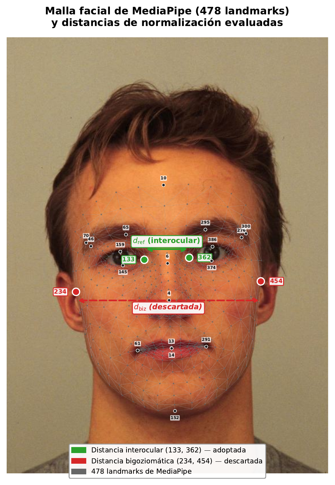
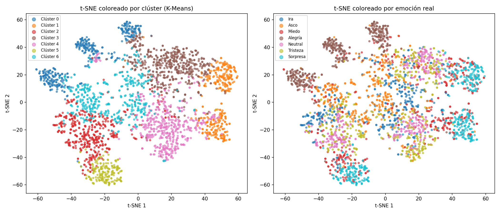
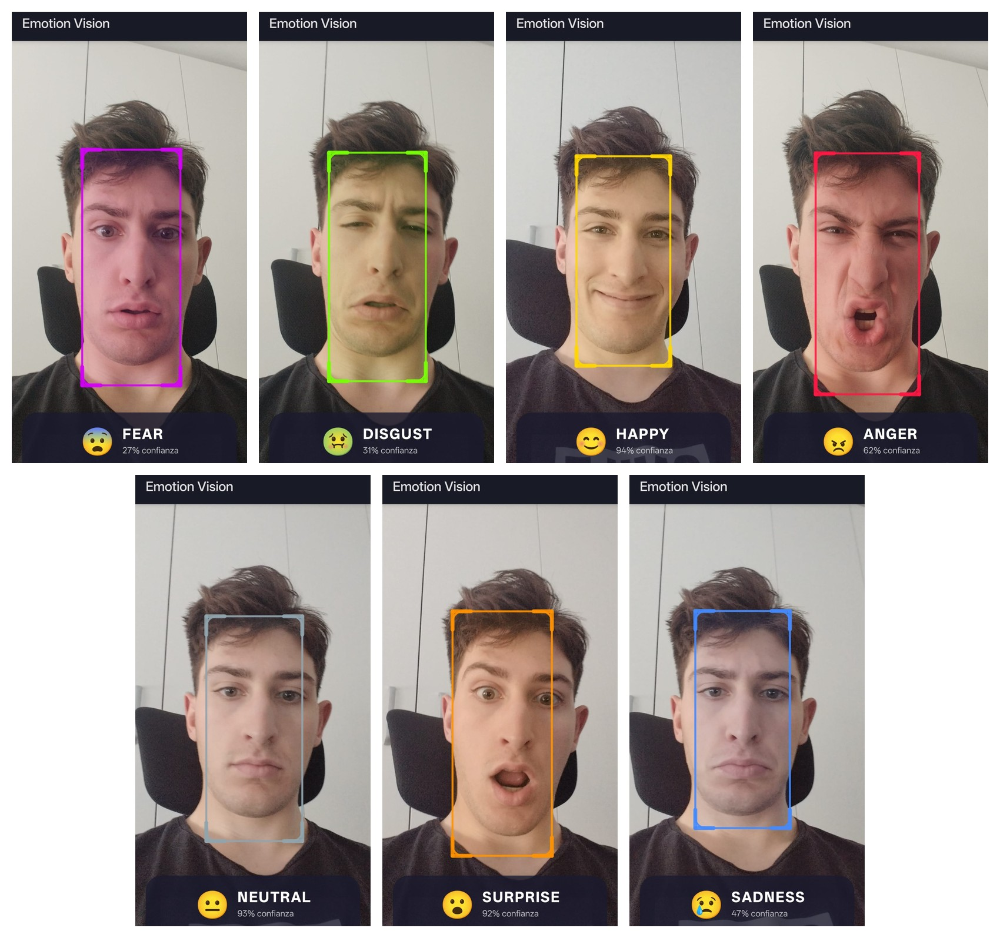

Clasificación automática de expresiones faciales mediante visión artificial y machine learning
Autor
Gabriele Ruggeri
Estudiante de Ingeniería Informática
Directores
Manuel Noguera García
Ángel Ruiz Zafra
Convocatoria
Junio de 2026
E.T.S. de Ingenierías Informática y de Telecomunicación
Cambio de Paradigma: Malla de Puntos vs. Imágenes
Frente al desarrollo clásico de IA basado en imágenes a secas (píxeles), este trabajo propone abstraer la anatomía facial mediante una malla densa de puntos geométricos. Al eliminar la apariencia y trabajar solo con coordenadas estructurales, se consigue:
- Reducción drástica del coste computacional tanto en la fase de entrenamiento como en la ejecución en tiempo real.
- Minimización del peso del modelo, permitiendo su almacenamiento y ejecución local en dispositivos limitados.
1. Vulnerabilidad ante Setup
Domain Shift por iluminación/entorno.
2. Inviabilidad en Dispositivos Limitados
Alto consumo de recursos.
3. Opacidad Metodológica
Caja negra sin interpretabilidad muscular.
Hitos e Ingeniería del Proyecto
- Ingeniería de Características (76D): Extracción y normalización de relaciones espaciales y coeficientes musculares (FACS) para independizar el modelo de los píxeles.
- Modelado y Aprendizaje por Conjuntos: Evaluación de cuatro paradigmas tabulares heterogéneos integrados en una arquitectura Stacking Ensemble.
- Despliegue en el Edge (Android): Portabilidad del modelo final a dispositivos móviles mediante ONNX, garantizando ejecución offline a tiempo real.
"Un enfoque de clasificación emocional basado en características geométricas y biométricas tabulares combinadas con un Stacking Ensemble permite alcanzar un rendimiento competitivo frente a las CNN, mitigando el domain shift y reduciendo el coste computacional en varios órdenes de magnitud."
Áreas de Impacto
Evolución de los Detectores Faciales
La transición tecnológica hacia la precisión geométrica estuvo marcada por la superación de barreras computacionales.
- ◆ Viola-Jones (2001): Detección pionera en tiempo real en CPU pero inestable ante rotaciones.
- ◆ Dlib (2009): Mapeo estándar de 68 landmarks 2D, vulnerable ante iluminación y oclusión.
- ◆ MTCNN / OpenFace (2016): CNNs profundas con excelente precisión, pero costes de cómputo inasumibles en el Edge.
- ◆ Google MediaPipe (2019): Hito disruptivo y pipeline adoptado: malla densa de 468 landmarks 3D en tiempo real.
Viola-Jones (Haar Cascades)
Revolución pionera en CPU de la época, pero inestable ante rotaciones no frontales.
Dlib (HOG + Linear SVM)
Establece el estándar de 68 landmarks 2D. Mayor robustez, pero sensible a oclusión.
MTCNN & OpenFace
Detección neuronal profunda y estimación 3D. Gran fidelidad, pero costoso para CPU móvil.
Google MediaPipe (Adoptado)
Mapeo tridimensional denso en tiempo real (468 landmarks 3D). Alta optimización Edge-first en CPU móvil (>30 FPS).
Google MediaPipe:
Abstración de la
Apariencia
Redefine la visión computacional móvil al procesar el rostro no como un mapa de píxeles, sino como una estructura geométrica y muscular pura mediante dos salidas simultáneas:
- ◆ Malla Geométrica 3D (Landmarks): Topología densa de 468 puntos tridimensionales (X, Y, Z) para el cálculo de distancias métricas, invulnerable a cambios de iluminación, fondo o textura.
- ◆ Face Blendshapes: 52 coeficientes escalares acotados estrictamente entre 0 y 1 que miden de forma directa la intensidad de las contracciones musculares asociadas al sistema FACS de Ekman.

Métricas de Activación (Output)
Coeficientes de blendshapes musculares FACS detectados en tiempo real para el sujeto neutral.
Fundamentos teóricos de la expresión facial humana
La investigación se ancla firmemente en la psicología cognitiva y en la anatomía funcional del rostro humano.
- Paul Ekman: Postula la existencia de emociones universales con expresiones transculturales homólogas.
- FACS (Facial Action Coding System): Sistema taxonómico que descompone cualquier expresión en Unidades de Acción (AUs) musculares discretas.

Transición al corpus KDEF de alta resolución
El descarte de conjuntos clásicos de baja resolución como FER2013 fue imprescindible para garantizar la estabilidad de los descriptores.
- Limitación de FER2013: Imágenes de 48×48 px inviables para MediaPipe; Landmarks excesivamente inestables y ruidosos.
- Dataset KDEF: Fotografías de alta resolución (562×762 px), 70 actores expresando las 7 emociones.
- Rotaciones Cefálicas: Selección de 3 ángulos (Frontal, Lateral Izq. -45°, Lateral Der. +45°) para robustecer el clasificador ante perfiles.
- Partición Estratificada: 70/30 (2.054 muestras de entrenamiento y 880 de test).
70 Actores
35 hombres y 35 mujeres
3 Rotaciones
0° (frontal), ±45°
Balanceado
420 muestras / clase
Partición Estratificada del Dataset (2.934 imágenes)
Construcción del vector biométrico de
76 dimensiones
- Enfoque Híbrido Sinérgico: Concatenación de relaciones espaciales rígidas (osamenta facial) con métricas de intensidad muscular dinámica en un único vector de entrada.
- Ventaja de Tabularización: Transforma millones de píxeles de una imagen cruda en solo 76 valores numéricos, reduciendo drásticamente la carga computacional en el Edge.
Bloque 1: Geométricas
19DReducción de 468 landmarks a 19 distancias espaciales clave.
Bloque 2: Discriminantes
6D6 variables discriminantes diseñadas para mitigar el solapamiento Ira/Asco.
Bloque 3: Blendshapes
51DFiltrado de 52 blendshapes a 51 coeficientes activos (exclusión de neutral).
(mouthFrown + browInnerUp) < 0.25
La
elección crítica de la
normalización interocular

Donde los landmarks 133 y 362 corresponden a los extremos interiores de la fisura palpebral (distancia interocular en el plano de proyección 2D).
| Módulo de Normalización | Varianza (Pose Frontal) | Varianza (Rotación ±45°) | Resolución Final |
|---|---|---|---|
| Distancia Bizigomática (Orejas) | 0.02 | 0.38 (Oclusión crítica) | Descartada por inestabilidad |
| Distancia Interocular (Ojos) | 0.01 | 0.03 (Visibilidad continua) | Adoptada (Invariante espacial) |
La distancia interocular actúa como un normalizador intrínseco e invariante. Los datos experimentales demuestran que mitiga eficazmente el problema de escala y el cambio de distancia del usuario a la cámara, manteniendo la estabilidad formal incluso en rotaciones severas de la cabeza.
Arquitectura
Stacking Ensemble
Fusión heterogénea de paradigmas de aprendizaje.
Evaluación del
Sistema Heurístico en Cascada
Degradación de rendimiento por acumulación de umbrales estáticos.
| Etapa de Incorporación | Emociones Activas | Accuracy Global |
|---|---|---|
| Etapa 1 | Neutral, Alegría | 97.27% |
| Etapa 2 | + Sorpresa | 92.39% |
| Etapa 3 | + Ira | 79.90% |
| Etapa 4 | + Tristeza COLAPSO | 64.69% |
Al incorporar emociones complejas y reglas rígidas de baja precisión (ej. Tristeza con F1 de solo 39.7%), la clase Neutral sufrió un desplome crítico en su F1-Score, cayendo de 91.7% al 47.3%. Las muestras no capturadas por los umbrales de la cascada fueron absorbidas erróneamente por Neutral por defecto.
boca_w > 1.70 && boca_h > 0.10
boca_h > 0.25 && ira_ojos > 0.20
ira_arruga + ira_ceja_v +
boca_w
sad_mouth > 0.004 || sad_eyes < 0.21
Especialistas Jerárquicos
Clasificadores binarios especializados vs. modelo global.
Con solo 19 features, el Stacking base ya extrae el máximo de información. Los sub-modelos introducen ruido matemático, no señal.
Múltiples modelos concurrentes duplican FLOPS y memoria. Rompe el requisito de eficiencia en dispositivos móviles.
El Stacking Ensemble supera consistentemente a los modelos base
Evaluamos el modelo final en el conjunto de test (n = 880 muestras, perfiles de ±45° incluidos) obteniendo una ganancia estadística robusta.
- Superioridad del Ensemble: Alcanza un 81.8% de precisión en test, batiendo a XGBoost (+0.7%) y SVM (+4.3%).
- Estudio de Ablación (Importancia de Características):
- Solo geométricas (19D): 75.0%
- Solo blendshapes (51D): 78.5%
- Combo Híbrido (76D): 81.8% (Sinergia real) - Conclusión: Las distancias aportan morfología global y los blendshapes capturan tensión muscular localizada.
Análisis de rendimiento por clase emocional
Métricas en el conjunto de test (n = 880 muestras).
- Alegría (95.8% F1) domina por la unicidad de la sonrisa de Duchenne.
- Sorpresa, Neutral e Ira (80-87% F1) son estables y bien delimitadas.
- Tristeza, Asco y Miedo (71-77% F1) presentan alto solapamiento muscular.
La topología no supervisada confirma un espacio continuo
La reducción a 32 dimensiones (PCA, 95% var.) seguida de t-SNE revela la estructura real de la expresión facial humana.
- Solapamiento Natural (Silhouette = 0.12): Los clústeres matemáticos se entrelazan en un espacio continuo, demostrando que las emociones humanas no son bloques rígidos ni ortogonales.
- Aislamiento de la Alegría: Forma el único agrupamiento natural perfectamente compacto y segregado, gracias a la morfología expansiva de la sonrisa.

Pipeline nativo Edge AI en tiempo real
Implementación en Kotlin y Jetpack Compose sin dependencias en la nube, operando localmente a más de 30 FPS.
- Inferencia en CPU (< 1 ms): Ejecución local ultra ligera mediante el motor de ONNX Runtime.
- Corrección Lógica FACS: Filtro heurístico que elimina falsos positivos de Tristeza en rostros neutros.
- Estabilización Temporal: Suavizado por EMA e histéresis para evitar parpadeos entre fotogramas.

App «Emotion Vision» clasificando las 7 emociones en tiempo realDemostración práctica de la aplicación en tiempo real
Conclusiones de la investigación y líneas futuras
La hipótesis inicial se ha validado plenamente, demostrando que la biometría geométrica es una alternativa madura y robusta a las CNN.
- Validación Teórica: El desacoplamiento de apariencia logra inmunidad real ante el domain shift e iluminación cambiante en móviles.
- Eficiencia y Privacidad: Inferencia interpretable local a latencia despreciable.
- Smart Glasses: Propuesta de integración en gafas inteligentes para asistencia emocional a personas invidentes.
- Análisis Secuencial: Integración de modelos recurrentes (LSTM) para transiciones y microexpresiones.
81.8% Acc
Test set de 880 muestras.
<1 ms
Inferencia CPU Edge.
Matriz de Confusión — Stacking Ensemble
¡Muchas gracias por su atención!
Trabajo Fin de Grado — Grado en Ingeniería Informática
Autor: Gabriele Ruggeri
E.T.S. de Ingenierías Informática y de Telecomunicación